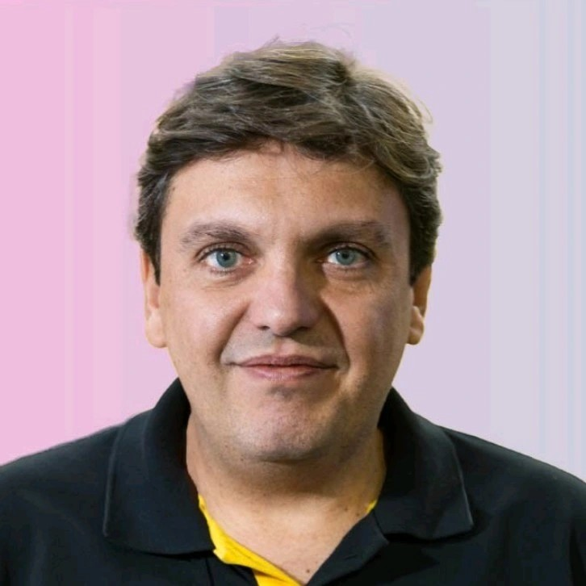

Communications Consultant
Driving impact through data-informed storytelling, crisis management, and stakeholder engagement. Transforming complex challenges into clear, compelling narratives.
View My Work

Featured Work
Media Relations & Performance Analysis
Executed a data-driven PR strategy for a portfolio of industrial clients, achieving up to 97% positive coverage and successfully managing two crises.
View Case Study →Community Relations & Social Listening
Designed and led a qualitative research project to diagnose community sentiment and deliver strategic recommendations for a major infrastructure project.
View Case Study →Crisis & Action Planning
Developed a comprehensive action plan for a high-end real estate developer to navigate a pre-crisis scenario involving legal and community challenges.
View Case Study →